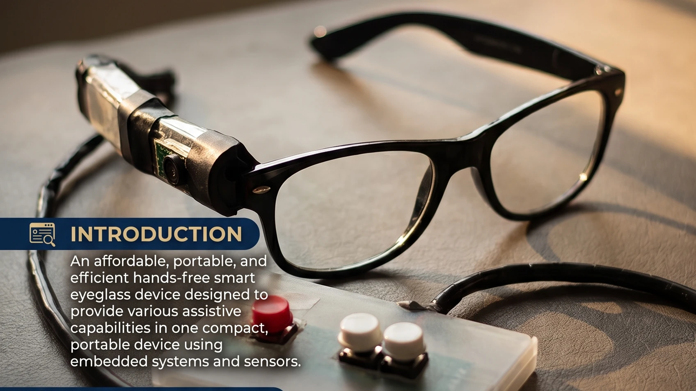
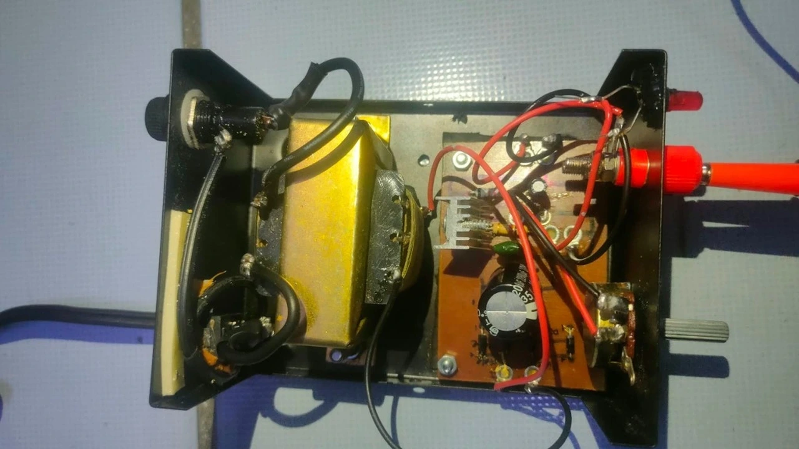
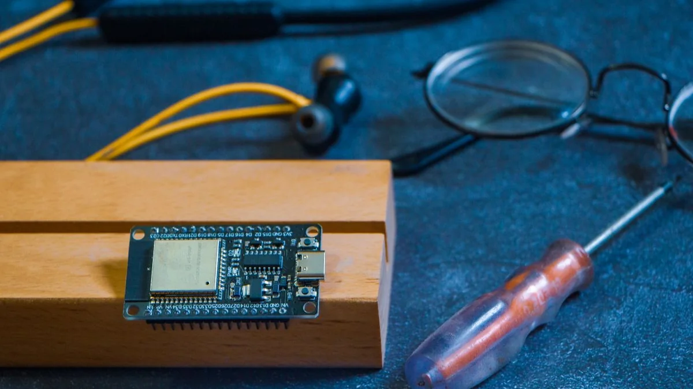
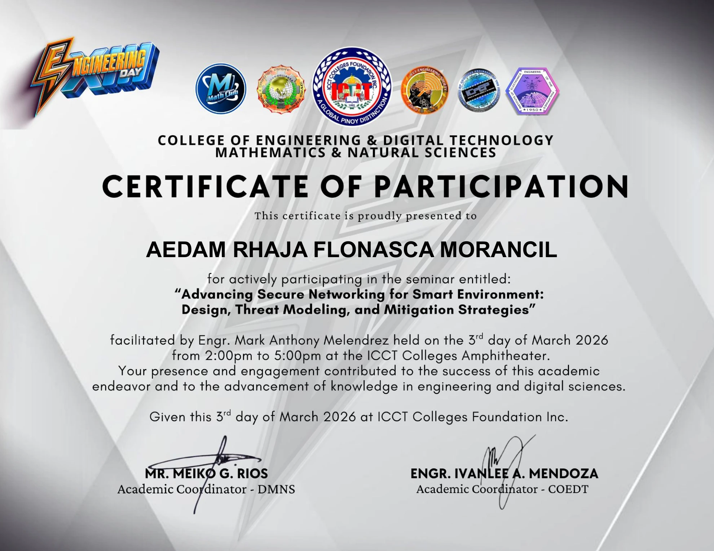
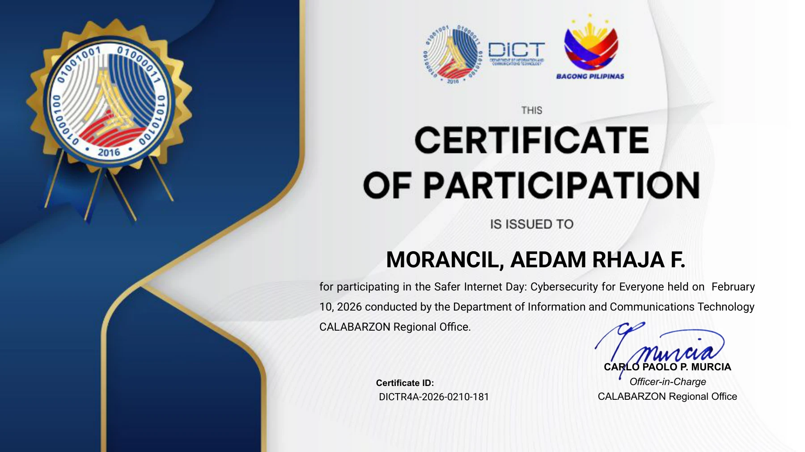
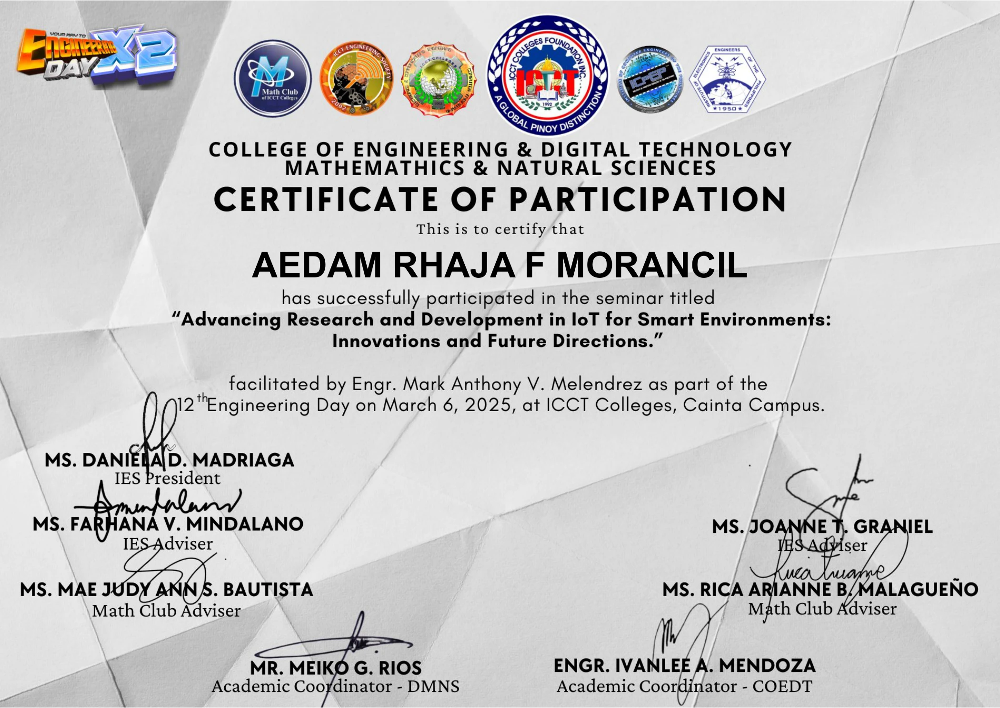
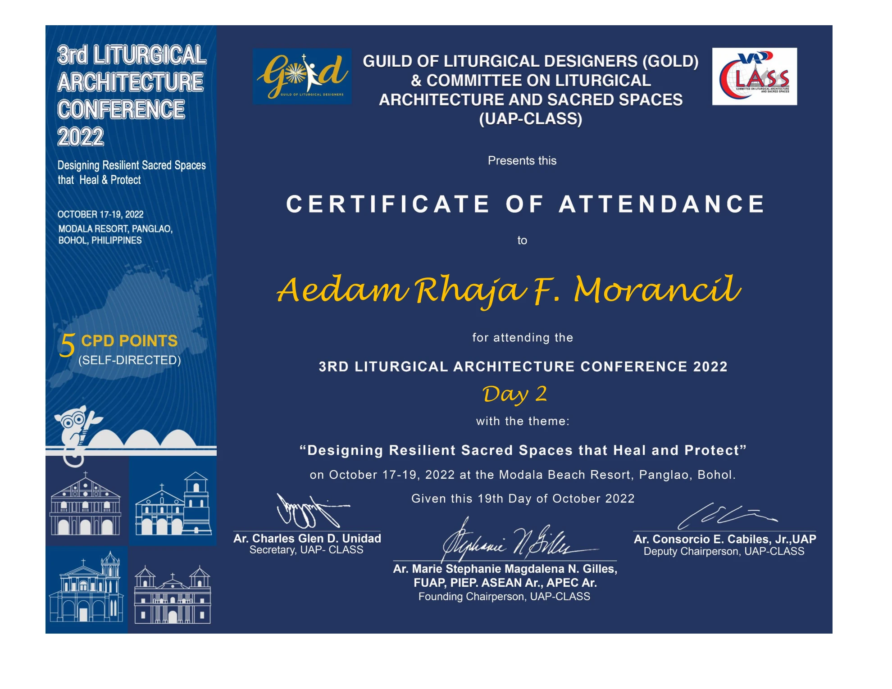

BS in Computer Engineering
ICCT Colleges · College of Engineering
Academic interests include ESP32, sensors, embedded systems, digital measurements, electronics prototyping, and hardware troubleshooting.
Curious enough to learn. Committed enough to finish.
I'm Aedam Rhaja F. Morancil (ADI), a Computer Engineering student at ICCT Colleges and an experienced procurement and operations professional. I bring hands-on experience in supplier sourcing, project coordination, quality assurance, and problem-solving into my growing interest in electronics, embedded systems, and practical technology.
ICCT Colleges · College of Engineering
Academic interests include ESP32, sensors, embedded systems, digital measurements, electronics prototyping, and hardware troubleshooting.
RGT Art Glass and Aluminum Supply
Prepare quotations and project documents; coordinate with clients and job sites; source, compare and negotiate with local and international suppliers; manage purchasing, importation, delivery schedules and quality checks.
Safeway Diagnostic Medical Clinic · Psychology Department
Administer standardized assessments; explain testing procedures; organize materials and results; maintain confidential records; coordinate schedules and provide department administration support.
Safeway Diagnostic Medical Clinic · Radiology Department
Assist with patient registration, appointments, records and scheduling; coordinate with clinical staff; keep documentation and sensitive patient information organized.

Smart Assistive Eyeglasses System for Individuals with Severe Mobility Impairments
Smartpoint Glasses operates as the cursor or mouse for individuals who cannot use their hands or arms due to illness, motor disabilities, or paralysis, but whose fingers remain functional. Natural head tilts guide fluid on-screen cursor movement, while accessible low-effort finger switches on a companion module handle clicking. Features dwell selection, MAX30102 pulse oximetry, emergency SMS alerts, offline voice commands, and CareMotion ESP32-C3 Wi-Fi synchronization.

Design & Implementation of Regulated 220V AC to 12V DC System
Focused on the hardware design, electrical engineering, and hands-on physical implementation of a benchtop power supply converting 220V AC mains electricity into clean, regulated DC voltage up to 12V DC. The project involved mastering the complete power conversion process, selecting and calculating appropriate components (step-down transformer, diode bridge rectifier, capacitive smoothing filters, and heatsinked linear regulator), and ensuring safe, stable voltage delivery for electronic circuits and embedded systems.
Design and Development of an Automated Metal-Cutting System
MetroSure focuses on automating the metal-cutting workflow. It explores controlled cutting operations that aim to improve precision, make repeated cuts more consistent, and reduce unnecessary manual effort in fabrication. The image is a concept illustration; the cutting method, hardware, and testing results are not yet documented here.

Electronics, sensors, and embedded-system coursework
Hands-on academic work at ICCT Colleges involving ESP32 microcontrollers, sensors, digital measurement, electronics prototyping, basic embedded programming, hardware troubleshooting, and technical documentation.
Smartpoint Glasses and Power Supply feature actual Capstone research, circuit hardware, and benchtop testing photographs. MetroSure and workbench photos include conceptual representations.
International & local supplier sourcing, price negotiation, quotation engineering, logistics schedules and quality inspection.
ESP32 microcontrollers, electronics prototyping, sensor interfacing, digital measurement tools and automation workflows.
C++ object-oriented systems, Java programming, Python scripting for data & automation, and Android Studio application basics.
Standardized assessment administration, sensitive clinical records handling, project documentation and client coordination.
Official credentials, engineering seminars, cybersecurity participation, and accredited conferences.

Conferred to: AEDAM RHAJA FLONASCA MORANCIL
Event: 4th Engineering Day — "Innovating Tomorrow: Navigating the Future of Engineering with AI, Secure Networking, and Sustainable Technologies"
Schedule & Venue: March 3, 2026 (2:00 PM – 5:00 PM) · ICCT Amphitheater, V.V. Soliven Ave. II, Cainta, Rizal
Resource Speaker: Engr. Mark Anthony Melendrez
Authorized Signatories: Mr. Meiko G. Rios (Academic Coordinator, DMNS) & Engr. Ivanlee A. Mendoza (Academic Coordinator, COEDT)
"This Certificate of Participation is conferred to AEDAM RHAJA FLONASCA MORANCIL for active participation in the seminar entitled 'Advancing Secure Networking for Smart Environment: Design, Threat Modeling, and Mitigation Strategies' held during the 4th Engineering Day on March 3, 2026 at the ICCT Amphitheater."

Conferred to: MORANCIL, AEDAM RHAJA F.
Issuing Agency: Department of Information and Communications Technology (DICT) — Regional Office CALABARZON in support of Bagong Pilipinas
Credential Verification ID: DICTR4A-2026-0210-181
Platform & Medium: Online Nationwide Live Webinar via Zoom and Facebook Live
Signatory: Carlo Paolo P. Murcia (Officer-in-Charge, Regional Office CALABARZON, DICT)
"This Certificate of Participation is presented to MORANCIL, AEDAM RHAJA F. for actively participating in the webinar entitled 'Safer Internet Day: Cybersecurity for Everyone' held on February 10, 2026 via Zoom and Facebook Live."

Conferred to: AEDAM RHAJA F MORANCIL
Event: 12th Engineering Day — "Forging Connections: Advancing Research and Sustainable Technologies"
Schedule & Venue: March 6, 2025 · ICCT Colleges Cainta Campus
Resource Speaker: Engr. Mark Anthony V. Melendrez
Signatories: Daniela D. Madriaga (President, IES), Farhana V. Mindalano (Co-Adviser, IES), Joanne T. Graniel (Adviser, IES), Mae Judy Ann S. Bautista (Co-Adviser, Math Club), Rica Arianne B. Malagueño (Adviser, Math Club), Meiko G. Rios (Academic Coordinator, DMNS), Engr. Ivanlee A. Mendoza (Academic Coordinator, COEDT)
"This Certificate of Participation is conferred to AEDAM RHAJA F MORANCIL for active participation in the seminar entitled 'Advancing Research and Development in IoT for Smart Environments: Innovations and Future Directions' held during the 12th Engineering Day on March 6, 2025 at ICCT Colleges Cainta Campus."

Sub-theme: "Designing Resilient Sacred Spaces that Heal and Protect" · Conferred to: Aedam Rhaja F. Morancil
Conferring Bodies: GUILD OF LITURGICAL DESIGNERS (GOLD) & United Architects of the Philippines - Committee on Liturgical Architecture and Sacred Spaces (UAP-CLASS)
CPD Accreditation: Accredited with 5 CPD Points (Self-Directed)
Conference Dates & Venue: October 17–19, 2022 (Conferred October 19, 2022) · Modala Beach Resort, Panglao, Bohol, Philippines
Signatories: Ar. Charles Glen D. Unidad, uap (Co-Chair, 3rd LAC), Ar. Marie Stephanie Magdalena N. Gilles, fuap, piep, earoph, ccp, green ap (Chair, 3rd LAC & Founder / Executive Director, GOLD), Ar. Consorcio E. Cabiles, Jr., fuap (Chair, UAP-CLASS)
"This Certificate of Attendance is conferred on Aedam Rhaja F. Morancil for attending and actively participating in the 3rd Liturgical Architecture Conference 2022 (Day 2: Designing Resilient Sacred Spaces that Heal and Protect) held at Modala Beach Resort, Panglao, Bohol on October 17–19, 2022. Accredited with 5 CPD Points (Self-Directed)."
Sub-theme: "Designing Resilient Sacred Spaces that Heal and Protect" · Conferred to: Aedam Rhaja F. Morancil
Conferring Bodies: GUILD OF LITURGICAL DESIGNERS (GOLD) & United Architects of the Philippines - Committee on Liturgical Architecture and Sacred Spaces (UAP-CLASS)
CPD Accreditation: Accredited with 5 CPD Points (Self-Directed)
Conference Dates & Venue: October 17–19, 2022 · Modala Beach Resort, Panglao, Bohol, Philippines
Signatories: Ar. Charles Glen D. Unidad, uap (Co-Chair, 3rd LAC), Ar. Marie Stephanie Magdalena N. Gilles, fuap, piep, earoph, ccp, green ap (Chair, 3rd LAC & Founder / Executive Director, GOLD), Ar. Consorcio E. Cabiles, Jr., fuap (Chair, UAP-CLASS)
"This Certificate of Attendance is conferred on Aedam Rhaja F. Morancil for attending and actively participating in the 3rd Liturgical Architecture Conference 2022 (Day 1: Designing Resilient Sacred Spaces that Heal and Protect) held at Modala Beach Resort, Panglao, Bohol on October 17–19, 2022. Accredited with 5 CPD Points (Self-Directed)."
Computer Engineering Student · Procurement & Operations Specialist
Bachelor of Science in Computer Engineering
ICCT Colleges · College of Engineering
Focus: Embedded systems, sensor automation, circuit troubleshooting, and hardware-software integration. Key Projects: Smartpoint Glasses (assistive head-tilt cursor navigation, tactile finger clicking, MAX30102 pulse oximetry) & Power Supply (220V AC mains to regulated 12V DC hardware conversion).
RGT Art Glass and Aluminum Supply
Lead local and international procurement, supplier negotiations, project estimation, quotation preparation, job site coordination, delivery schedules and quality control.
Safeway Diagnostic Medical Clinic · Psychology Department
Administered standardized psychological assessments, recorded testing results, managed confidential clinical records, and supported department scheduling.
Safeway Diagnostic Medical Clinic · Radiology Department
Coordinated patient intake, radiology appointments, clinical documentation, and sensitive diagnostic records.
I welcome opportunities to collaborate, exchange ideas, and apply my background in procurement, operations and computer engineering.
Direct Contact Channels:
Email: rhajaaedam01@gmail.com
LinkedIn: linkedin.com/in/aedam-rhaja-869ab6214
GitHub, Twitter/X and Facebook: profiles can be added when verified.